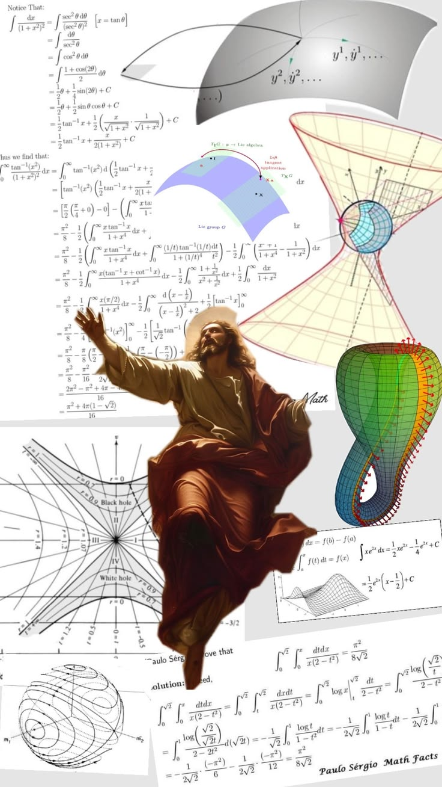
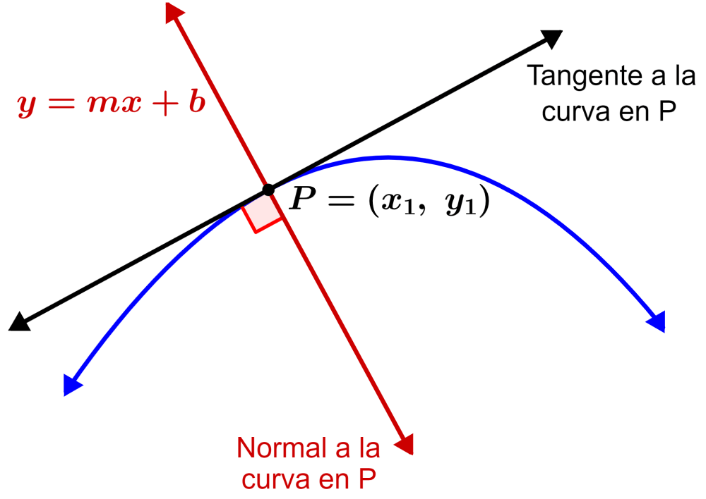
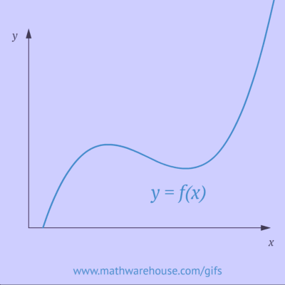
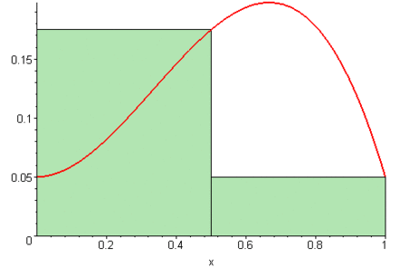

A donde sea que mire, Todo me lleva a Jesus
Y todo empezò cuando descubrì el calculo, una obra maravillosa del creador
PADRE - CALCULO DIFERENCIAL
La derivada describe la ley local que gobierna la evolución de un sistema,
la estructura qque determina hacia dónde tiende cada punto. Del mismo modo,
veo al Padre como el principio del que emana el orden y la dirección.
Hay en cada funcion de transformacion, esto es, en cada minimo cambio que
percibimos en la realidad, el movimiento detras del movimiento, una tendencia
infinitesimal, que determina la esencia detras de cada minimo movimiento que
hagamos. Aquello es Dios, el movimiento mismo como tal, el tiempo en su
totalidad en la cual emerge todo movimiento.
HIJO - CALCULO INTEGRAL

Allí donde la derivada analiza lo infinitesimal, la integral nos regresa al estado
primitivo de lo que en su esencia es y fue. Me recuerda a la capacidad humana que,
una vez dado la esencia de la cosa, se nos necesario saber la primitiva de tal cosa,
pues si hay una funcion que nos transforma y desnuda su esencia, debe existir otra funcion
inversa que nos devuelva su estado primitivo.
Y de esa forma, lo imposible se hizo tangible para una naturaleza tal vulgar y burda como
la humana, pues el verbo se hizo carne, una funcion inversa divina que de la absoluta
divinidad retorna a un cuerpo human.
Jesus entonces, se simboliza como la funcion inversa divina que creò Dios para estar entre
nosotros.
ESPIRITU SANTO - CALCULO MULTIVARIABLE/VECTORIAL
La realidad jamas hace caso a nuestras formalidades y limites racional, siempre nos
demuestra lo terriblemente complejo y gigante que puede hacer. No alcanza la
simbologia para representar cada minima interdependencia para estudiar el
espiritu que emana en cada soplo de existencia. El espiritu que yase en todos lados
reclama multiples variables y patrones de tendencia que solo mediante un campo
vectorial, se puede apreciar. El espiritu santo es la consecuencia del movimiento mismo
del cual emergue todo.
APLICACIONES GEOMETRICAS DE LAS DERIVADAS

La pendiente de una recta tangente se define como
\[m = \tan(\alpha)\]
Cuando \(\alpha \to 0\), se cumple que \[m = \tan(\alpha) = \frac{\Delta y}{\Delta x}\]
Es decir, la pendiente es el cociente entre el incremento en \(y\) y el incremento en \(x\).
De esta manera se obtiene la ecuación de la recta tangente en un punto \((x_0, y_0)\):
\[y - y_0 = m(x - x_0)\]
Recta tangente:
\[\quad y - y_0 = f'(x_0)\,(x - x_0)\]
Recta normal:
\[\quad y - y_0 = -\frac{1}{f'(x_0)}\,(x - x_0)\]
SE REPASA UN POCO DE TEORIA DE CONJUNTOS
INYECTIVIDAD
1). Primer ejemplo de inyectividad.
Sea \(f:\mathbb{R}\to\mathbb{R}\) definida por \(f(x)=x-1\). Entonces \(f\) es inyectiva.
Supongamos \(a,b\in\mathbb{R}\) y \(f(a)=f(b)\). Entonces
\[a-1=b-1.\]
Sumando \(1\) a ambos lados se obtiene
\[a=b.\]
Por tanto, si \(f(a)=f(b)\) implica \(a=b\), \(f\) es inyectiva. \(\square\)
2). Segundo ejemplo de inyectividad.
La función \(f:\mathbb{R}\to\mathbb{R}\) dada por \(f(x)=x^2-x+2\) no es inyectiva.
Basta encontrar \(a\neq b\) tales que \(f(a)=f(b)\). Tomemos \(a=0\) y \(b=1\). Entonces
\[
f(0)=0^2-0+2=2,\qquad f(1)=1^2-1+2=2,
\]
y \(0\neq 1\). Por tanto \(f(0)=f(1)\) con \(0\neq 1\), luego \(f\) no es inyectiva. \(\square\)
SOBREYECTIVIDAD
1).Primer ejemplo de sobreyectividad.
Sea \(f:\mathbb{R}\to\mathbb{R}\), \(f(x)=x-1\). Entonces \(f\) es sobreyectiva.
Sea \(y\in\mathbb{R}\). Queremos \(x\in\mathbb{R}\) tal que
\[f(x)=x-1=y.\]
Resolviendo para \(x\):
\[x=y+1.\]
Como \(y+1\in\mathbb{R}\), tal \(x\) siempre existe. Por lo tanto, \(f\) es sobreyectiva. \(\square\)
2).Segundo ejemplo de sobreyectividad.
Sea \(f:\mathbb{R}\to\mathbb{R}\), \(f(x)=x^2-x+2\). Entonces \(f\) no es sobreyectiva.
La imagen de \(f\) no cubre todos los reales.
Notemos que
\[f(x)=x^2-x+2 = \left(x-\tfrac{1}{2}\right)^2 + \tfrac{7}{4}.\]
De aquí se ve que
\[f(x)\geq \tfrac{7}{4} \quad \forall x\in\mathbb{R}.\]
Por lo tanto, ningún \(y<\tfrac{7}{4}\) está en la imagen. Así, \(f\) no es sobreyectiva sobre \(\mathbb{R}\). \(\square\)
BIYECTIVIDAD
1).Primer ejemplo de biyectividad.
Sea \(f:\mathbb{R}\to\mathbb{R}\), \(f(x)=x-1\).
- Ya vimos que \(f\) es inyectiva: si \(f(a)=f(b)\implies a=b\).
- También es sobreyectiva: para cada \(y\in\mathbb{R}\), existe \(x=y+1\) tal que \(f(x)=y\).
\(f\) es biyectiva. \(\square\)
2).Segundo ejemplo de biyectividad.
Sea \(f:\mathbb{R}\to\mathbb{R}\), \(f(x)=x^2-x+2\).
- No es inyectiva: \(f(0)=f(1)=2\) con \(0\neq 1\).
- No es sobreyectiva: su imagen es \(\{ y\in\mathbb{R}\mid y\geq \tfrac{7}{4} \}\), por lo que ningún \(y<\tfrac{7}{4}\) pertenece al recorrido.
\(f\) no es biyectiva. \(\square\)
DERIVADAS DE FUNCIONES TRIGONOMETRICAS
Las derivadas de funciones trigonométricas surgen aplicando reglas primarias + la regla de la cadena.
Primero se obtienen las formas simples (sin x, cos x, tan x) y después se generalizan a funciones compuestas (sin(f(x)), cos(f(x)), ...).
1. Seno de x:
\[\quad \frac{d}{dx}\big(\sin x\big) = \cos x\]
2. Seno de una función:
\[\quad \frac{d}{dx}\big(\sin(f(x))\big) = \cos(f(x)) \cdot f'(x)\]
3. Coseno de x:
\[\quad \frac{d}{dx}\big(\cos x\big) = -\sin x\]
4. Coseno de una función:
\[\quad \frac{d}{dx}\big(\cos(f(x))\big) = -\sin(f(x)) \cdot f'(x)\]
5. Tangente de x:
\[\quad \frac{d}{dx}\big(\tan x\big) = \sec^2 x\]
6. Tangente de una función:
\[\quad \frac{d}{dx}\big(\tan(f(x))\big) = \sec^2(f(x)) \cdot f'(x)\]
7. Cotangente de x:
\[\quad \frac{d}{dx}\big(\cot x\big) = -\csc^2 x\]
8. Cotangente de una función:
\[\quad \frac{d}{dx}\big(\cot(f(x))\big) = -\csc^2(f(x)) \cdot f'(x)\]
9. Secante de x:
\[\quad \frac{d}{dx}\big(\sec x\big) = \sec x \cdot \tan x\]
10. Secante de una función:
\[\quad \frac{d}{dx}\big(\sec(f(x))\big) = \sec(f(x)) \cdot \tan(f(x)) \cdot f'(x)\]
11. Cosecante de x:
\[\quad \frac{d}{dx}\big(\csc x\big) = -\csc x \cdot \cot x\]
12. Cosecante de una función:
\[\quad \frac{d}{dx}\big(\csc(f(x))\big) = -\csc(f(x)) \cdot \cot(f(x)) \cdot f'(x)\]
DERIVADAS PRIMARIAS
El concepto de límite en cálculo describe el valor al que se aproxima una función cuando la variable independiente se acerca a un punto.
En trigonometría, hay dos límites fundamentales:
1) \[\lim_{\alpha \to 0} \frac{\sin \alpha}{\alpha} = 1\]
Este límite es esencial porque permite definir la derivada de sin 𝑥 en 𝑥 = 0.
2) \[\lim_{h \to 0} \frac{\cos h - 1}{h} = 0\]
Este aparece al calcular la derivada de cos x en x = 0.
Ambos son la base para demostrar derivadas de funcions primarias y trigonometricas cuando su comportamiento se acerca a 0.
Las derivadas primarias son reglas fundamentales que permiten calcular la derivada de funciones más complejas a partir de expresiones simples.
Son la base del cálculo diferencial y se aplican en combinación para derivar prácticamente cualquier función.
1. Derivada de una constante:
\[\quad \frac{d}{dx}(c) = 0\]
2. Derivada de una variable:
\[\quad \frac{d}{dx}(x) = 1\]
3. Derivada de suma y diferencia:
\[\quad \frac{d}{dx}(u + v - w) = \frac{du}{dx} + \frac{dv}{dx} - \frac{dw}{dx}\]
4. Derivada por una constante por función:
\[\quad \frac{d}{dx}(c \cdot v) = c \cdot \frac{dv}{dx}\]
5. Derivada por una potencia:
\[\quad \frac{d}{dx}(u^n) = n \, u^{\,n-1} \cdot \frac{du}{dx}\]
6. Derivada por un producto:
\[\quad \frac{d}{dx}(uv) = u \cdot \frac{dv}{dx} + v \cdot \frac{du}{dx}\]
7. Derivada por un cociente:
\[\quad \frac{d}{dx}\!\left(\frac{u}{v}\right) = \frac{v \cdot \frac{du}{dx} - u \cdot \frac{dv}{dx}}{v^2}\]
8. Derivada por cociente con constante:
\[\quad \frac{d}{dx}\!\left(\frac{u}{c}\right) = \frac{1}{c} \cdot \frac{du}{dx}\]
9. Derivada Raiz cuadrada de una función:
\[\quad \frac{d}{dx}(\sqrt{u}) = \frac{1}{2\sqrt{u}} \cdot \frac{du}{dx}\]
10. Derivada de raiz cuadrada de x:
\[\quad \frac{d}{dx}(\sqrt{x}) = \frac{1}{2\sqrt{x}}\]
11. Regla de cadena:
\[\quad \frac{dy}{dx} = \frac{dy}{du} \cdot \frac{du}{dx}\]
FALTA CALCULO MULTIVARIABLE Y VECTORIAL
Si este contenido te fue útil y quieres apoyar mi trabajo, puedes invitarme un café ☕
LOGARITMOS BREVE REPASO
Las funciones logarítmicas tienen derivadas que dependen de la \textbf{regla de la cadena} y de la base del logaritmo.
\[\text{Caso especial:} \quad \frac{d}{dx}(\ln x) = \frac{1}{x}, \quad x > 0\]
\[\text{Para logaritmos en base } a: \quad \frac{d}{dx}(\log_a x) = \frac{1}{x \ln a}, \quad a > 0, \; a \neq 1\]
Estas son la base de todas las demás fórmulas.
DERIVADAS DE FUNCIONES LOGARITMICAS
El breve repaso de los logaritmos nos dan las bases que consecuan a sus siguientes derivadas:
\[\textbf{1.} \quad \log_a(1) = 0\]
\[\textbf{2.} \quad \log_a(a) = 1\]
\[\textbf{3.} \quad \log_a(a^x) = x\]
\[\textbf{4.} \quad a^{\log_a x} = x\]
\[\textbf{5.} \quad \log_a(xy) = \log_a x + \log_a y\]
\[\textbf{6.} \quad \log_a\!\left(\frac{x}{y}\right) = \log_a x - \log_a y\]
\[\textbf{7.} \quad \log_a(x^n) = n \cdot \log_a x\]
\[\textbf{8.} \quad \log_a\!\left(\sqrt[n]{x}\right) = \frac{1}{n} \log_a x\]
\[\textbf{9.} \quad \log_{a^n}(x) = \frac{1}{n} \log_a x\]
\[\textbf{10.} \quad \log_a x = \frac{\ln x}{\ln a}\]
\[\textbf{11.} \quad \log_a b = \frac{1}{\log_b a}\]
CRITERIOS PARA DETERMINAR EXTREMOS RELATIVOS
Un máximo relativo ocurre en un punto donde la función alcanza un valor mayor que en sus alrededores,
y un minimo relativo donde la función toma un valor menor que en sus alrededores.
\[\text{Si } f'(x_0) = 0 \quad \Rightarrow \quad \text{posible máximo o mínimo en } x_0.\]
\[\textbf{Ejemplo: } f(x) = x^2\]
\[f'(x) = 2x \quad \Rightarrow \quad f'(0)=0\]
\[f''(x) = 2 > 0 \quad \Rightarrow \quad \text{mínimo relativo en } x=0.\]---
Criterio de la segunda derivada:
\[f''(x_0) > 0 \;\; \Rightarrow \;\; \text{mínimo relativo en } x_0\]
\[f''(x_0) < 0 \;\; \Rightarrow \;\; \text{máximo relativo en } x_0\]
\[f''(x_0) = 0 \;\; \Rightarrow \;\; \text{indeterminado (se revisa más con derivadas superiores).}\]---
Criterio de la tercera derivada (generalización): Si se cumple que
\[f'(x_0) = f''(x_0) = \dots = f^{(n-1)}(x_0) = 0, \quad f^{(n)}(x_0) \neq 0\]
- Si \(n\) es par y \(f^{(n)}(x_0) > 0 \;\;\Rightarrow\;\; \text{mínimo relativo.}\)
- Si \(n\) es par y \(f^{(n)}(x_0) < 0 \;\;\Rightarrow\;\; \text{máximo relativo.}\)
- Si \(n\) es impar \(\;\Rightarrow\;\) no hay máximo ni mínimo, sino punto de inflexión.
Si este contenido te fue útil y quieres apoyar mi trabajo, puedes invitarme un café ☕
TEOREMA FUNDAMENTAL DEL CALCULO
Consecuencias de la derivada

El \(\text{Teorema Fundamental del Cálculo}\) establece la conexión entre derivadas e integrales:
La integral definida de una función continua es igual a la diferencia de los valores de su primitiva en los extremos.
\[\int_a^b f(x)\,dx = F(b) - F(a)\]
donde \(F(x)\) es una función tal que \(F'(x) = f(x)\).
De esta manera, el cálculo integral y el diferencial quedan unidos en un mismo marco matemático.
INTRODUCCION INTEGRALES
Interpretaciónes
La \(\text{integral}\) se entiende como la \(\text{inversa de la derivada}\).
\[f(x) = x^2 \quad \Rightarrow \quad f'(x) = 2x\]
Entonces, integrar devuelve la función original (más una constante):
\[\int 2x \, dx = x^2 + C\]
---
Otra interpretación de la integral es el \(\text{área bajo la curva}\) entre \(a\) y \(b\). Se aproxima dividiendo el intervalo en muchos rectángulos:
\[\sum_{i=1}^{n} f(x_i) \cdot \Delta x\]
Al tomar cada vez más rectángulos (\(\Delta x \to 0\), \(n \to \infty\)) se obtiene la definición formal de la integral definida:
\[\int_a^b f(x)\,dx = \lim_{n \to \infty} \sum_{i=1}^{n} f(x_i)\,\Delta x\]
REGLA DE LA CADENA
La regla de la cadena en integrales se usa cuando tenemos una función compuesta del tipo \( f(g(x)) \cdot g'(x) \).
En ese caso:
\[\int f(g(x)) \, g'(x) \, dx = F(g(x)) + C\]
donde \(F\) es una primitiva de \(f\).
Ejemplo:
\[\int 2x \cos(x^2) \, dx\]
Hacemos el cambio \( u = x^2 \), entonces \( du = 2x \, dx \).
La integral se convierte en:
\[\int \cos(u) \, du = \sin(u) + C\]
Reemplazamos \( u = x^2 \):
\[\int 2x \cos(x^2) \, dx = \sin(x^2) + C\]
TENDIENDO A LO INFINITAMENTE PEQUEÑO
para encontrar el area bajo una curva

La sumatoria de Riemann es un método para aproximar el área bajo una curva.
Se divide el intervalo \([a,b]\) en \(n\) subintervalos de ancho \(\Delta x = \frac{b-a}{n}\).
En cada subintervalo se toma un punto \(x_i^*\) y se evalúa la función \(f(x)\).
La suma de las áreas de los rectángulos formados es:
\[S_n = \sum_{i=1}^{n} f(x_i^*) \, \Delta x\]
Cuando el número de particiones \(n\) crece indefinidamente, los rectángulos se vuelven más delgados y la suma se aproxima al área exacta bajo la curva.
El límite de estas sumas es lo que definimos como la integral definida:
\[\int_a^b f(x) \, dx = \lim_{n \to \infty} \sum_{i=1}^{n} f(x_i^*) \, \Delta x\]
De esta manera, la integral representa el área exacta bajo la gráfica de \(f(x)\) entre \(x=a\) y \(x=b\).
INTEGRALES PRIMARIOS
\[\int k \, dx = kx + C\]
\[\int x^n \, dx = \frac{x^{n+1}}{n+1} + C \quad (n \neq -1)\]
\[\int \frac{1}{x} \, dx = \ln |x| + C\]
\[\int e^x \, dx = e^x + C\]
\[\int a^x \, dx = \frac{a^x}{\ln a} + C \quad (a>0, a \neq 1)\]
\[\int \sin x \, dx = -\cos x + C\]
\[\int \cos x \, dx = \sin x + C\]
\[\int \sec^2 x \, dx = \tan x + C\]
\[\int \csc^2 x \, dx = -\cot x + C\]
\[\int \sec x \tan x \, dx = \sec x + C\]
\[\int \csc x \cot x \, dx = -\csc x + C\]
\[\int \frac{1}{\sqrt{1-x^2}} \, dx = \arcsin x + C\]
\[\int \frac{-1}{\sqrt{1-x^2}} \, dx = \arccos x + C\]
\[\int \frac{1}{1+x^2} \, dx = \arctan x + C\]
\[\int \frac{-1}{1+x^2} \, dx = \text{arccot}\, x + C\]
\[\int \frac{1}{x\sqrt{x^2-1}} \, dx = \arcsec x + C\]
\[\int \frac{-1}{x\sqrt{x^2-1}} \, dx = \arccsc x + C\]